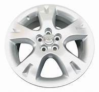
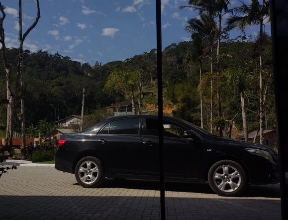

Ficha Técnica XEI
Motor: 1.8 16V Dual VVT-i
Potência: 136 cv
Consumo: Econômico para a categoria

O Sedã Inquebrável
O Corolla 2010 na versão XEI é conhecido pelo seu conforto, motor 1.8 Flex de 136cv e a lendária confiabilidade mecânica da Toyota.
- Motor 1.8 VVTi
- Câmbio Manual
- Bancos de Couro
- O inquebravel que quebrou na minha mão
Visual do Carro
Corolla Preto - Elegância Atemporal

Tenho Interesse
Deixe seus dados e entrarei em contato para negociar este Corolla.